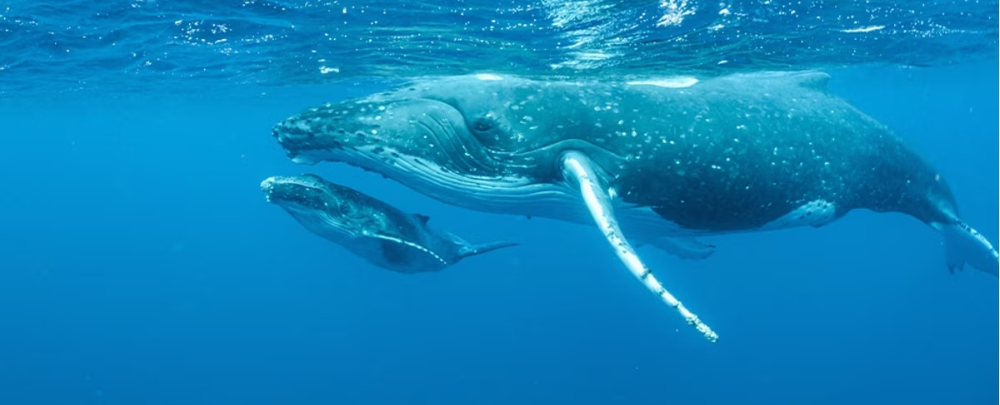

DESCUBRE SOBRE WWF
Inicio
Quienes somos
Historias
Contactanos
ALGUNOS DATOS RELACIONADOS CON LAS ESPECIES EN PELIGRO DE EXTINCIÓN
FECHA
AUTOR
30 Abril 2024
RICARDO ANGELES DIEGO
Animales en peligro de exticion

Ballena Azul
Guacamayo Rojo
Mariposa Monarca